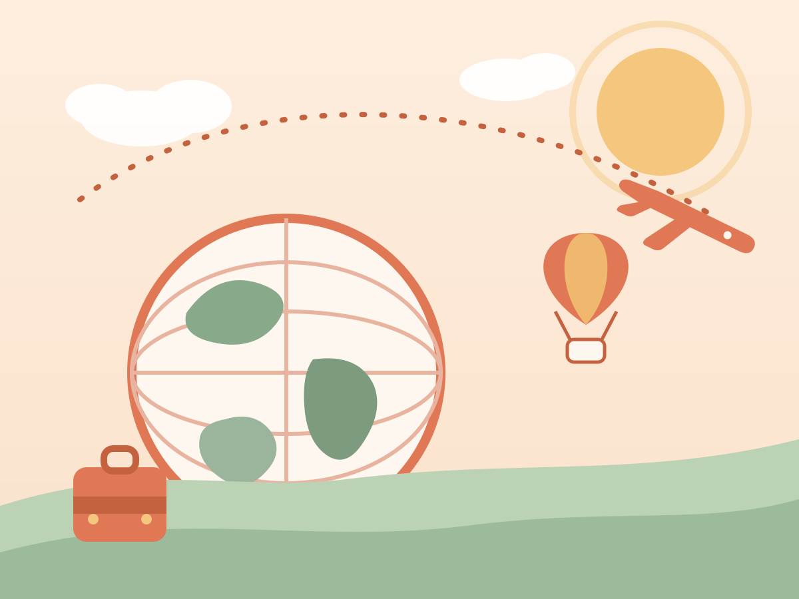
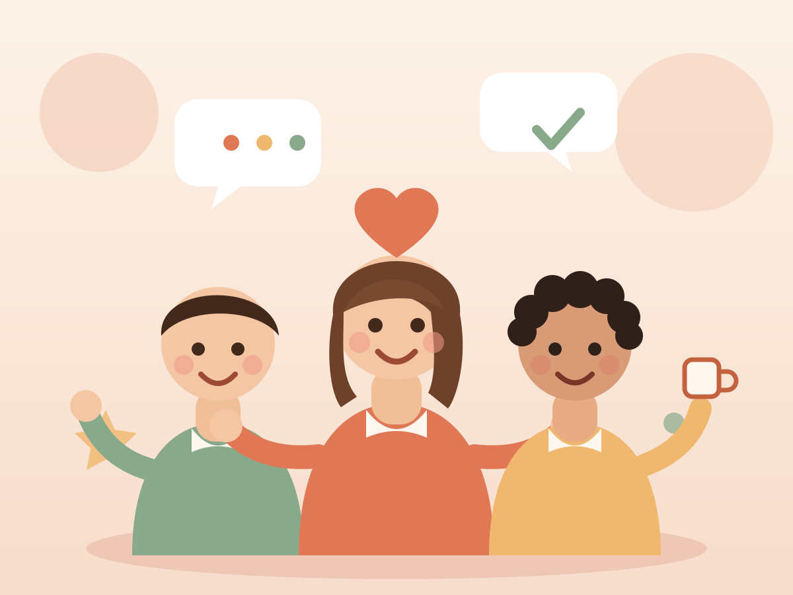

✈️
Travelling the world
New cities, new foods, new stories — I love collecting corners of the globe and the perspectives that come with them.
A Canadian educator and equity consultant with over 12 years of teaching and professional learning, now living in Suzhou, China, where I'm pursuing my MSc in Digital Education at Xi'an Jiaotong-Liverpool University. I'm a Registered Early Childhood Educator and an Ontario Certified Teacher — and I believe learning feels best when it's warm, playful, and human.
My happy place is right between the classroom and the big picture of education.
I've taught young learners for more than 12 years as an RECE and Ontario Certified Teacher.
I design curriculum and facilitate learning with ministries of education, school boards, and stakeholders.
Now exploring digital education at XJTLU — a Canadian with a new corner of the world to call home.
It all started at Algonquin College in Ottawa, where I trained in Early Childhood Education and discovered just how much I loved learning alongside children. I went on to complete my Bachelor of Education in Early Childhood Education at the University of New Brunswick.
Since then, my work has woven through classrooms, consulting, and community leadership — from a decade teaching with the Ottawa-Carleton District School Board (where I received the Excellence in Equity Award), to designing anti-oppressive professional learning at Culture Check, to board leadership with Parents for Diversity. These days I'm adding a digital edge to all of it through my master's at XJTLU.
A quick snapshot of my path in education:
When I'm not teaching or studying, you'll usually find me doing one of these.

New cities, new foods, new stories — I love collecting corners of the globe and the perspectives that come with them.
One of my favourite things about growing up in Canada — nothing clears my head like a day on the slopes.

Some of my favourite adventures have started with a simple “hello.” Great conversations are my kind of souvenirs.
Whether it's about education, curriculum, travel, or snow conditions — I'd love to hear from you.
Get in touch